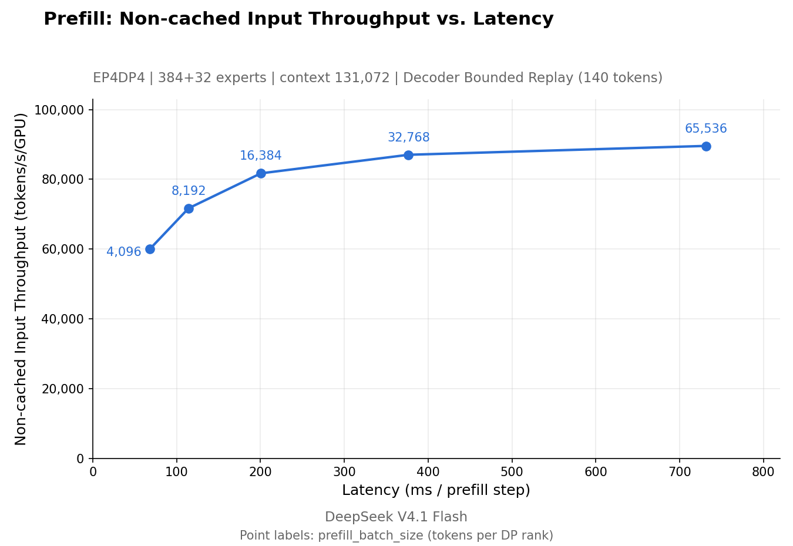
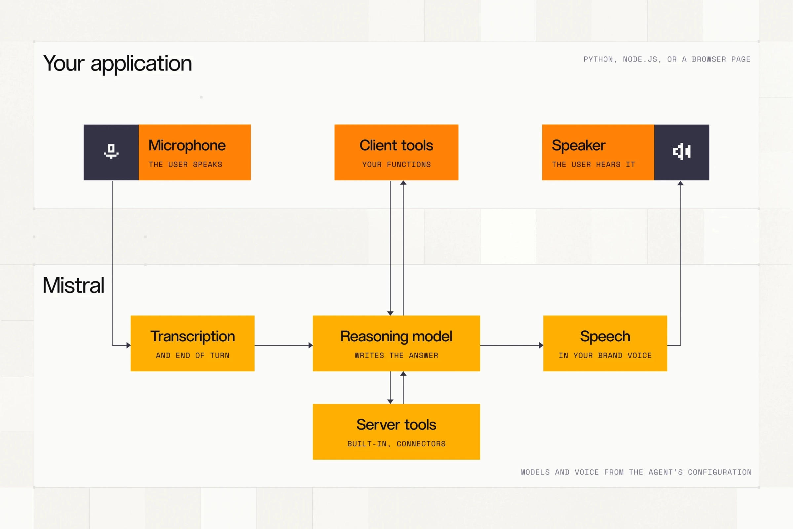
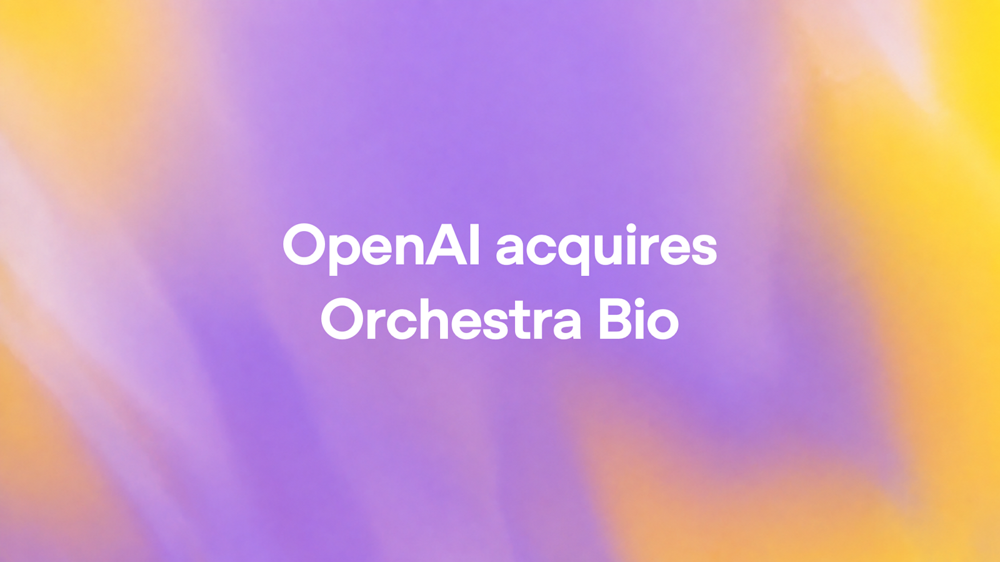
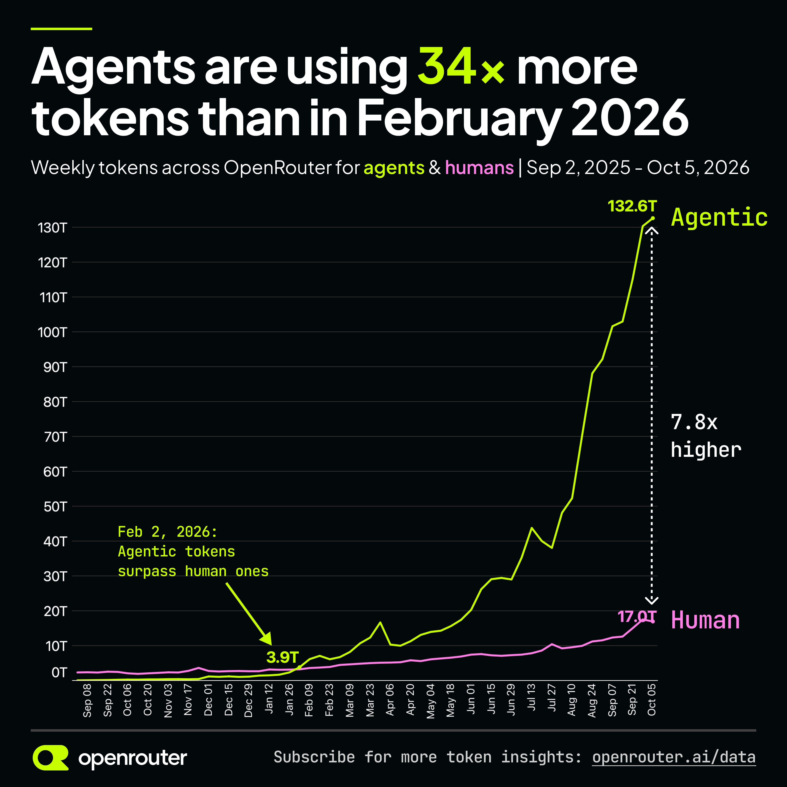

AI Intelligence Daily · 2026-10-21（周三）
今日一句话判断
专栏一｜新闻
本栏：国际 1 长条（Perplexity 本地 Computer）+ 国内 1 长条（DeepInfer，快讯 17:19 吸收）+ 国际 3 长条（Vercel durable-harness / OpenAI 12h 缓存 / Mistral Voxtral 3）+ 国际 1 中条（OpenAI 收购 Orchestra Bio）+ 国内 1 中条（CodeBuddy 2.171.0）+ 国际 2 短条（eMudhra 中间 CA 私钥泄露 / Sierra×Stripe）+ 合并短讯。按「重要度 → 用户相关性 → 时效」排序。不单独入栏：STEPX 第二批（仍无一手）、OpenCode RCA（仍无）、MiniMax M3.1 Flash 权重（仍未上架）。
1. Perplexity Computer 可在 Mac 上完全本地运行：模型与 Agent 都在本机
发生了什么（事实）
- @perplexity_ai 主帖：Perplexity Computer 现可在 Mac 上完全本地运行，可操作原生 Mac 应用和本地文件，敏感数据不出本机；官方原话是「模型和 Agent 都运行在你的 Mac 上」，已在 Perplexity Mac app 上线。核验时 impressions ≈16.7 万、likes ≈1131、bookmarks ≈541。
- 线程第 2 帖：本地任务使用 PPLX Pro（官方称是基于 Qwen 3.8 后训练的版本），不消耗 Computer credits；复杂任务可用 Hybrid 模式，把任务在云端模型和本地模型之间拆分，敏感数据留在本地。
- 线程第 3 帖：面向 Pro / Max / Enterprise 订户，需受支持的 Apple silicon Mac，建议 36 GB 统一内存；需先在 Mac app 里配置本地模型。
- 官方说明页 Run Computer locally on your Mac 对本机抓取返回 403（Cloudflare），页面标题与摘要经 X 卡片核验：「Mac app 可在本机完整运行 Computer 任务，或把云端模型与私有文件上的本地工作配对」。
我的判断
- 这是一线厂把完整 Computer-use Agent（模型 + Loop + 工具执行）做成本地可交付产品，而不是「本地壳 + 云端大脑」。我算作
desktop_work_agent_shipping=1。 - 真正的信号是 Hybrid 拆分：同一个任务里，哪一步走云、哪一步留本地，由产品替用户决定——这是「数据驻留」从部署选项变成任务级调度策略。
- 用国产开源底座（Qwen 3.8）后训练做本地 Agent 模型，说明「开放权重 + 垂直后训练」已经够用到商业 Desktop Agent。评 强A，不升 S：硬件门槛（36 GB）与实际本地成功率还没有第三方数据。
往后看：本地/Hybrid 的拆分规则是否公开；本地模式的权限沙箱与审计；Windows 版本；其他 Desktop Agent（Claude / ChatGPT / MiniMax / Kimi）是否跟进「本地全栈」。
对智能体互联网：Agent 的执行位置开始成为可声明属性（本地 / 云 / 混合）。跨 Agent 调用时，调用方可能需要知道对方「数据会不会出本机」——这可以成为 Agent 能力描述或 Trust 声明的一个字段。
对 Work / Agent 引擎：直接对标。① Runtime 需要支持「同一会话内云端模型 + 本地模型」的分步路由；② 本地执行面要有与云端一致的工具协议与权限模型；③ 计费上「本地任务不扣 credits」会倒逼云端 Agent 产品重新定价。
建议动作：对标架构（Hybrid 拆分策略、本地模型规格、权限边界）；有 36 GB 以上 Mac 可做一次实测；纳入需求评审：「任务级数据驻留策略」。
来源：主 @perplexity_ai 线程 · 官方说明页
2. DeepSeek DeepInfer：生产推理框架 Apache-2.0 开源（快讯已推，日报补全）
发生了什么（事实）
- deepseek-ai/DeepInfer：DeepSeek 称其为支撑大规模生产服务的高性能推理框架，Apache-2.0；README 写明当前支持 DeepSeek-V4.1-Flash，硬件为 NVIDIA SM100 与华为昇腾 950；含 FlashMLA / DeepGEMM / DeepEP 算子、Attention DP、MoE EP+EPLB、推测解码、确定性采样、结构化输出等。开源版不含完整线上 KV cache 系统与 Prefill/Decode 分离编排。
- 同步开源 deepseek-recipe（与官方 API 对齐的 Token 编解码组件）。知乎 @DeepSeek 工程文 披露线上指标（如 cache hit ≈96%、KV 闲置保留 72h）。
- 今日新增：DeepInfer ★12,143、deepseek-recipe ★1,504（GitHub API，08:15 CST）；HN 讨论 2,101 分 / 820 评论，为统计窗内 HN 最高分。@deepseek_ai X 仍未补发。
我的判断
- 一线厂把「线上跑 Flash 的那一层」整框架开源，Serving 竞争从算子库升到框架层；昇腾 950 一等支持对国内私有化部署分量很重。快讯已推，日报不重复论证，只确认社区反应强烈且实质（HN 2,101 分不是情绪噪音）。
往后看：社区补 KV / PD 分离的方案；vLLM / SGLang 是否吸收其算子；后续模型推理代码是否同仓 Day-0。
对智能体互联网：间接。自建 DeepSeek 服务节点成本下降，Agent 服务网络里「自托管节点」会变多，Trust 仍落在部署方网关。
对 Work / Agent 引擎：强相关。确定性采样 + 结构化输出对 tool-call 复现与评测有直接价值；若默认大脑是 DeepSeek Flash，可把 DeepInfer 列入 Serving 对照（vs vLLM / SGLang）。
建议动作：拆源码（调度器与确定性采样实现）；评估补 KV/PD 的工程量后再决定 PoC。

来源：主 GitHub DeepInfer · deepseek-recipe · 知乎 @DeepSeek · 社区 HN · 快讯 flashes/2026-10-20-1719.md
3. Vercel durable-harness：让 Claude Code / Codex / OpenCode / Pi 崩溃后自动续跑
发生了什么（事实）
- Making every harness durable：Vercel 推出开源包 durable-harness，为 Pi、OpenCode、Codex、Claude Code 等现成 harness「从外部」加上持久性，无需改动 harness 本身；可跑在 Vercel、自托管 Postgres，甚至本机。
- 机制（原文）：每个 turn 的每一步写入持久日志——模型调用或工具调用前先记录 intent，完成后记录 outcome；turn 由队列消息兜底，函数死掉后由新函数读日志接着跑。已完成的调用不重跑（不会重复计费 token）；标注
replay: 'safe'的工具会重放，其他中断的工具以「可能已执行」交回模型自行判断；Claude Code transcript、Codex rollout、OpenCode event store 等会话文件被镜像进日志，可在新函数或 Sandbox 中重建。底层复用 Workflow SDK 的World（Storage + Queue + Streamer）接口。 - 博文还指出：并非所有 Agent 任务都需要 Sandbox，数据库查询和 API 调用可在函数里跑，凭证不必进入 Sandbox。
- 仓库 vercel-labs/durable-harness：Apache-2.0，创建于 10-16，★28（刚官宣）。@vercel 官宣帖 impressions ≈4.4 万。
我的判断
- 这把「Agent Loop 的可恢复性」从各家 harness 的私有实现，抽成了harness 无关的外挂层——intent/outcome 双写日志 + 工具幂等标注，是工作流引擎（Temporal 一类）思想在 Agent 上的直接移植。
- 「工具中断后交给模型判断是否已执行」是务实但值得警惕的设计：对有副作用的工具，最终仍要靠幂等键或外部状态核对。
- 长期趋势信号：harness 正在变成可托管的工作负载，云平台在争夺「Agent 运行时」这一层。评 A。
往后看：仓库星标与采用；与 Claude Code / Codex 官方 cloud 模式的关系；对有副作用工具的幂等约定是否标准化。
对智能体互联网：「凭证不进 Sandbox、在函数侧完成调用」与委托授权设计一致——Agent 拿到的是能力，不是密钥。
对 Work / Agent 引擎：高度相关。① 对照自家 Agent Loop 是否有 intent/outcome 日志与崩溃续跑；② 工具 schema 增加 replay 安全等级；③ 会话文件镜像到持久存储，支持跨 Sandbox 重建 Workspace。
建议动作：拆源码（日志格式、工具重放语义）；做 PoC：给现有 harness 套一层同类 durable 日志；纳入需求：工具副作用分级。
4. OpenAI API 支持 12 小时 prompt cache：为「全天在线的 Agent」降成本
发生了什么（事实）
- @OpenAIDevs：API 可选 12 小时 prompt caching；官方举例「像 dots 这样的持久 Agent 全天复用上下文」，共享指令、工具和上下文可缓存更久并按较低的 cached-input 价计费。可在同一请求中混用：共享指令 12h，新对话内容用默认 30 分钟。impressions ≈14.8 万。
- Prompt caching 文档：GPT-5.6 及以后，Responses API 用
prompt_cache_options.ttl选"30m"（默认，写入 1.25× 输入价）或"12h"（写入 2.5× 输入价）；读取均为 0.1×（GPT-6.1 Sol 为 0.05×）。支持显式断点prompt_cache_breakpoint（每请求最多 4 个写入）、prewarm预热、用prompt_cache_key做按客户的缓存隔离（文档明确提到可防止跨用户 cache-hit 探测）。
我的判断
- 价格设计说明 OpenAI 认定主流负载已从「一问一答」变成「长时间、多次间隔复用同一前缀的 Agent」。12h 写入贵一倍，只有在一天内多次复用时才划算——这是给 Agent 平台而不是聊天应用的定价。
- 文档里关于跨用户 cache-hit 探测的提示，是一个容易被忽视的多租户安全点。评 A。
往后看：Anthropic / Google 是否跟进更长 TTL；Agents API 会话是否默认使用 12h。
对智能体互联网：无直接启示。
对 Work / Agent 引擎：高度相关。① 上下文组装要「稳定前缀在前、动态内容在后」，并显式打断点；② 多租户下按租户设置 prompt_cache_key 做缓存隔离；③ 在成本模型里加入 TTL 选择逻辑（按前缀复用间隔自动选 30m/12h）。
建议动作：纳入需求（上下文分层 + 缓存断点 + 租户隔离）；用真实会话日志测算 12h 是否划算。
配图：文档与帖子均无事件专图，不配。
来源：主 OpenAI 文档 · @OpenAIDevs · 线程续帖
5. Mistral Voxtral 3：语音模型族 + 基于 LiveKit 的语音 Agent SDK
发生了什么（事实）
- Voxtral 3 官方博文：新语音识别 Voxtral Small Transcribe 3（多语种转写、说话人分离、上下文偏置、说话结束检测）与 Mini Transcribe 3（4B 参数，$0.0035/分钟），语音合成 Voxtral Mini TTS 3（35+ 语言、50+ 方言，按对话自动调整情绪/语速/重音，也支持
[emotion=sad][pace=slow]这类显式标签）；Pro Voice 用约 30 分钟音频做专业级声音适配。 - 同时推出语音 Agent SDK（@MistralAI 称基于 LiveKit）：转写→推理模型思考并调用工具→语音回复，作为一条实时流水线。可走 Mistral 欧盟托管 API 或自部署。
- 官方图表（FLEURS 45 语种）称 Small Transcribe 3 WER 低于 Whisper、Scribe v2、Gemini 3.5 Transcribe 等（厂商自测）。@OpenRouter 当日上架三款模型，并提供欧盟托管与零数据保留端点。HN 491 分。
我的判断
- 亮点不在 WER，而在 「听—想—调工具—说」打包成 SDK 并可自部署，这让语音 Agent 从「拼三家 API」变成一个可私有化的整体。评 A−：基准为厂商自测。
往后看：SDK 的工具调用与打断处理实测；自部署许可条款。
对智能体互联网：电话/语音渠道的 Agent 会越来越多，语音身份（声音克隆 Pro Voice）带来新的冒充风险，Trust 层要考虑「声音不是凭证」。
对 Work / Agent 引擎：语音作为 Agent 的一种输入输出通道，可复用现有 tool-call 栈；如果产品有语音入口，Voxtral SDK 是可自部署的参考实现。
建议动作：关注后续；有语音场景时做 PoC。

来源：主 Mistral 博文 · @MistralAI · @OpenRouter
6. OpenAI 收购 Orchestra Bio：把「人和 Agent 协同推进药物项目」并入 Rosalind
发生了什么（事实）
- OpenAI acquires Orchestra Bio：Orchestra Bio 是帮助生物制药团队协调药物开发流程的平台，官方描述为「人和 AI Agent 一起推进药物项目」——科学家把研究与活动的监控、跟踪委托给 Agent；某环节出问题（如生产批次失败影响临床试验启动）时，Agent 找出受影响的活动与时间线并比较应对方案，由人决定。团队和技术将并入 Rosalind（GPT-Rosalind 与 Rosalind Workbench）。未披露交易金额。
- @OpenAI impressions ≈41.9 万。
我的判断
- OpenAI 在垂直行业买的是「项目协调型 Agent」而不是模型能力——长周期、多方依赖、人做决策、Agent 做跟踪与影响分析，这正是 Work Agent 的典型形态。评 B+：对用户项目是形态参考，不是技术突破。
对智能体互联网：跨组织（内部部门 + 外部合作方）的 Agent 协调是 Agent 互联的真实需求场景。
对 Work / Agent 引擎：「依赖图 + 影响分析 + 人审决策」可作为长任务 Work Agent 的参考模板。
建议动作：暂无需行动，关注 Rosalind 是否开放 Agent 接口。

7. 腾讯 CodeBuddy Code 2.171.0：修复 ACP 网关免密连接漏洞 + 后台会话崩溃自动续跑
发生了什么（事实）
- @tencent-ai/codebuddy-code 2.171.0（包内 CHANGELOG 日期 2026-10-20）：
- 安全修复：
--serve开启网关密码后，暴露远程端口或经 Tunnel/反向代理转发时，此前无需密码即可创建 ACP 连接、领取连接令牌，且密码可能经网址泄露到代理与访问日志（#146634）；另改进远程密码传递，避免暴露在进程参数与环境变量中。 - 后台会话崩溃自动续跑：
--bg会话异常退出（如 OOM）时按原会话--resume自动拉起并发送续跑提示，600 秒内最多 3 次，可用环境变量关闭或调整。 - 模型请求分层重试：优先遵循网关下发的
retry_policy，对 429/5xx/408/409 最多重试 8 次、指数退避封顶 32s，尊重Retry-After。 - 远程主机管理、远程授权目录只读浏览 Git；云端记忆工具统一命名为
MemoryRecall/MemoryUpdate，并明确「平台不可用时不得写本地文件替代」。 - 非一线厂 Desktop 新客户端发船。
我的判断
- 安全修复说明：Agent 的远程控制端口一旦经隧道暴露，鉴权缺陷就是远程代码执行入口——与此前 OpenCode Console、MCP 入口类 CVE 是同一类风险。崩溃续跑与 Vercel durable-harness 同日出现，「可恢复 Loop」成为共识。评 B+。
对 Work / Agent 引擎：对照自家远程/隧道模式：鉴权是否在所有转发路径上生效、密码是否会进 URL/日志/进程参数；记忆工具「不可用时不写本地」的约束值得照抄。
建议动作：纳入安全自查清单；关注是否出 CVE/公告。
配图：changelog 无事件专图，不配。
来源：主 npm 包内 CHANGELOG 2.171.0
8. eMudhra 8 张中间 CA 私钥泄露：主流浏览器已拦截，大量非浏览器客户端仍需更新
发生了什么（事实）
- 披露页：eMudhra 的 8 张中间 CA 证书私钥被泄露，它们链到 Mozilla、Microsoft、Apple、Chrome 根计划信任的根证书。报告人 10-17 用每个中间 CA 私钥签名消息证明，并提供 OpenSSL 验证方法。Firefox 和 Chrome 自 10-17 起已拦截，Apple 自 10-19；CA 已吊销。许多不消费吊销信息的客户端需要软件更新，否则持有私钥者可冒充任意网站或服务。
- 相关：Go 将拒绝含 8 个被弃用 SPKI 的证书链（HN 134 分）。HN 讨论 589 分。
我的判断
- 不是 AI 事件，但直接打到 Agent 运行环境：Sandbox 容器、CLI、自带信任库的 SDK 往往不读 CRL/CRLite，Agent 发出的 HTTPS 请求就可能被中间人冒充。评 B+（G/F 相关性加权）。
对智能体互联网：Agent 身份与服务发现普遍建在 Web PKI 上，这件事提醒：Agent-to-Agent 调用需要独立于浏览器的吊销与证书钉扎策略。
对 Work / Agent 引擎：检查 Sandbox 基础镜像的 CA bundle 版本与更新机制；用披露页给的测试域名做一次 curl 自检。
建议动作：立即自查（镜像信任库）；纳入需求：信任库随镜像自动更新。
配图：披露页无图，不配。
9. Sierra × Stripe：客服 Agent 在同一段对话里直接完成付款
发生了什么（事实）
- @SierraPlatform：与 Stripe 合作，客户可以在同一段对话中得到解答并付款，无需转人工、无需付款链接；Cedar 是首批通过该集成接受电话付款的客户之一（患者致电其 Agent「Kora」咨询账单并支付）。
我的判断
- Agent 代收款从「发链接跳出去」变成「对话内完成」，支付授权边界被搬进 Agent 会话。与 Sierra 的 PAP/Poppy 个人 Agent 协议线（watchlist 00）合看。评 B。
对智能体互联网：委托支付的同意、额度与审计如何在 Agent 对话中表达，是 Agent 身份/授权协议的硬需求。
建议动作：关注后续是否公开授权流程细节。
来源：主 @SierraPlatform
短讯｜合并
- ChatGPT 团队任务（国际，B）：@OpenAIDevs 15:24Z——可用 team tasks 自动化重复工程工作（如每周五汇总已发布与受阻事项），队友可审阅结果并修改下次覆盖内容。属「定时 Agent 任务 + 团队共享」。
- ChatGPT Locked Chats（国际，B）：@ChatGPT 17:32Z——可把对话移出常规历史与搜索，网页/桌面用 PIN、移动端用 PIN/Face ID/Touch ID 解锁。impressions ≈19.7 万。
- Anthropic：Claude 设计蝎毒素结合蛋白（国际，B）：官方博文——64 小时内生成 30 万+ 设计，送测 211 个，17 个达标；官方明确「不是抗蛇毒血清」。211 个设计与实验数据已在 Hugging Face 公开。科研 Agent 的长时自主运行案例。
- Qoder Lite $10/月（国内，B）：官方公告（13:25Z 官宣）——每月 1,000 Credits + 精选性价比模型，含完整 Agent 能力。套餐分层，非新客户端。
- Claude Code 2.1.305（国际，B−）：npm latest @19:29Z（stable 仍 2.1.304）；包内未附 CHANGELOG，变化待官方说明。
- Copilot CLI 1.0.101（国际，B−）：npm latest @18:49Z。Codex alpha 0.164.0-alpha.8（@22:40Z），latest 仍 0.163.0。
- Google 开源 TorchTPU（国际，B）：google-pytorch/torch_tpu，PyTorch 原生 TPU 后端；仓库 created 2026-03，近期公开引发 HN 246 分、IT之家等转述，★295。公开时间点以 HN 窗内为准，未见 Google 官方博文核验。
- Gemini Personal Intelligence 上车（国际，B−）：@Google 21:22Z——Android Auto 上的 Gemini 开始推送，经用户许可连接 Google 应用数据；未来数月扩展到 Google built-in 车型。
- VS Code Canvases（国际，B−）：@code——Preview 中的共享工作区，人和 Coding Agent 一起整理发布、排优先级，把卡片转成 Agent 可执行的计划。
- Reflection：OpenCode 上的匿名模型「CatJam」即 Beam（国际，B−）：@reflection_ai——Beam 在 OpenCode 继续免费一周。继 MiniMax「Space Bunny」之后，又一例「匿名跑榜→揭面」。
- ZCode 3.16.2（国内，B−）：changelog 10-20 露出（快讯 13:20 已记为功能迭代）。
专栏二｜话题热议
- DeepInfer 开源（国内→双边，强热）：HN 2,101 分 / 820 评论，统计窗内第一；GitHub 四天 ★12,143。讨论集中在「开源版缺 KV / PD 分离到底能不能用于生产」和昇腾支持。这是技术圈的实质讨论，不是情绪。
- Agent 流量已是人类的约 8 倍（国际）：@OpenRouter 21:00Z——自 2026 年 2 月初 Agent 用量增长 34×，周度 Agent 用量约为人类的 8 倍（图中为 132.6T vs 17.0T，7.8×，截至 10-05 这周）。这是单一平台口径，但趋势与 OpenAI 12h 缓存的定价逻辑互相印证。（见图 7）
- Aleksander Madry 回到 OpenAI 做安全（国际，J）：Madry 本人帖（10-19 17:16Z，即 10-20 01:16 CST，impressions ≈60 万）称离开「更像休假」，因「进入了 AI 进展的不同阶段」而回归；Sam Altman 21:10Z 回应称「面对超级智能，安全与安保挑战巨大」。判断：头部实验室把安全人才回流和「超级智能」叙事绑定公开表态，值得和 OpenAI Misalignment 报告线（watchlist 08）合看。
- 「发布假统计数据，就会被 LLM 引用」（国际，G）：HN 315 分，原文讲作者用编造数据被 AI 搜索大量引用的做法。对 Agent 检索/RAG 来说，这是数据投毒在商业 GEO 场景下的现实版本。
- Steam 用户要求「无 AI」过滤（国际）：HN 164 分，围绕 Next Fest 大量 AI 生成游戏。属情绪与平台治理话题，与两条主线弱相关。
- 国内：IT之家等转述 OpenAI COBOL、Orchestra Bio、TorchTPU；Meta Muse 美国 40 天下载破千万（IT之家，未核验一手，不入新闻栏）。量子位/机器之心本轮未抓到可核验新稿。
互动数字只引用 X public_metrics 与 HN 分数的核验值，不编造。

专栏三｜开源雷达
| 项目 | 核验点（2026-10-21 ≈08:15 CST） | 看点 / 建议 |
|---|---|---|
| deepseek-ai/DeepInfer（国内） | ★12,143（创建 10-16，10-20 首次提交）；HN 2,101 | 拆源码：调度与确定性采样 |
| deepseek-ai/deepseek-recipe（国内） | ★1,504 | 核对与官方 API tokenize 一致性 |
| vercel-labs/durable-harness（国际） | ★28（刚官宣）；Apache-2.0 | 拆源码：intent/outcome 日志、replay 语义 |
| google-pytorch/torch_tpu（国际） | ★295；窗内仍有提交 | 关注，非用户主线 |
| anomalyco/opencode | ★218,894（+1,109）；RCA 仍无 | 继续盯 trust |
| deepseek-ai/deepseek-harness | ★255,770（+1,323）；latest 仍 0.2.1-rc.2 | 盯稳定版；11-01 计费 |
| Tencent-Hunyuan/Hy-Memory | ★1,066（+106） | MemHub 热度延续 |
| microsoft/mxc · openai/math · reflection-oss/mirror | ★2,938（+13）· 15,303（+76）· 195（+7） | continuum |
| MiniMax M3.1 Flash 权重 | HF 仍未上架 | pin |
Desktop / CLI shipping 表
| 组件 | Daily 10-20 基线 | 现值（10-21 ≈08:15） | 结论 |
|---|---|---|---|
| 一线 Desktop/Work Agent | — | Perplexity Computer 本地模式上线 | shipping=1 |
| @openai/codex | 0.163.0 / α.6 | 0.163.0 / 0.164.0-alpha.8 | alpha 微 bump |
| @anthropic-ai/claude-code | 2.1.304 | 2.1.305（stable 2.1.304） | latest 升 |
| @github/copilot | 1.0.100 | 1.0.101 | latest 升 |
| @tencent-ai/codebuddy-code | 2.170.0 | 2.171.0 | 功能+安全修复 |
| @minimax-ai/code / Desktop | 0.6.12 / 3.1.4 | 同左 | 持平 |
| @deepseek-ai/dsh | 0.2.1-rc.2 | 同左 | 持平 |
| ZCode | 3.15.3 | 3.16.2 | 功能迭代 |
重点事件新进展
- DeepSeek DeepInfer（93）
- 此前：快讯 10-20 17:19 PUSH，开源与能力边界已述。
- 今日新增：★12,143、HN 2,101 分；@deepseek_ai X 仍未补发；仓库 11:03Z 后无新推送。
- 判断是否变化：重要度不变（强A），社区验证了热度。
- MiniMax M3.1 Flash（92）
- 此前：Daily 10-20 头条。
- 今日新增：@MiniMax_AI 转引第三方 Parallel 搜索效率榜 #1（第三方数据，非官方评测）；HF 权重仍未上架。
- 判断：无实质变化。
- Reflection Beam（73）
- 今日新增：OpenCode 匿名模型「CatJam」揭面为 Beam，OpenCode 免费延长一周。
- 判断：运营 UPDATE，非新权重。
- OpenCode BYOK（55/90）：仍无 RCA。STEPX（42）：第二批仍无一手，Launch Night SF 10-22。商务部 48 号（83）：无新稿，意见截止 11-15。
- Sierra 个人 Agent 线（00）：新增 Stripe 对话内支付集成（见新闻 9），PAP 规范未升版。
今天正在形成的趋势
- Agent 执行位置成为产品变量：Perplexity 本地全栈 + Hybrid 拆分、Voxtral 可自部署、DeepInfer 昇腾支持——「在哪里跑」从部署细节变成卖点和策略。
- 可恢复的 Agent Loop 成为共识：Vercel durable-harness 和 CodeBuddy 崩溃续跑同一天出现，长任务 Agent 必须假设进程会死。
- 定价开始围绕「全天在线的 Agent」设计：OpenAI 12h 缓存、Perplexity 本地任务不扣 credits、OpenRouter 显示 Agent 流量约为人类的 8 倍——成本模型的主角已经换了。
- 远程控制面是新的高危入口：CodeBuddy ACP 网关免密、eMudhra 证书泄露都在提醒，Agent 暴露的端口、隧道与信任库要按生产服务对待。
- 「匿名跑榜→揭面」成为固定发布套路：MiniMax Space Bunny 之后，Reflection CatJam 也走同一路线。
对智能体互联网最值得吸收的东西
- 把执行位置和数据驻留写进 Agent 能力声明：本地 / 云 / 混合，以及数据是否出本机，应该是调用方在委托前就能读到的字段。
- 能力代替密钥：Vercel 的「凭证不进 Sandbox、由函数侧代为调用」与 Sierra×Stripe 的对话内支付，都在走「Agent 拿能力、不拿凭证」的路线，可直接用于委托授权设计。
- Agent-to-Agent 调用不能只依赖浏览器级 PKI：需要自己的吊销检查或证书钉扎策略。
对 Work / Agent 引擎最值得吸收的东西
- intent/outcome 双写日志 + 工具 replay 安全等级（Vercel durable-harness）：让 Loop 崩溃可恢复，且不重复计费、不重复执行有副作用的工具。
- 上下文分层 + 显式缓存断点 + 按租户隔离缓存（OpenAI 12h 缓存文档）：稳定前缀在前，按复用间隔选 TTL，用
prompt_cache_key防跨租户探测。 - 云—本地混合路由（Perplexity Hybrid）：同一会话内按敏感度把步骤分给云端或本地模型，并统一工具协议和权限模型。
值得继续跟踪
- 事件：Perplexity Computer 本地/Hybrid，接下来重点观察：拆分规则文档、本地权限沙箱、Windows 版、竞品是否跟进。
- 事件：Vercel durable-harness，接下来重点观察：采用情况、对有副作用工具的幂等约定、与官方 cloud 模式的关系。
- 事件：OpenAI 12h prompt cache，接下来重点观察：其他厂商是否跟进更长 TTL。
- 事件：DeepInfer，接下来重点观察：KV / PD 分离补齐方案、vLLM/SGLang 吸收、@deepseek_ai 官宣。
- 事件：CodeBuddy ACP 网关鉴权漏洞，接下来重点观察：是否出 CVE 或安全公告。
- 事件：eMudhra 中间 CA 泄露，接下来重点观察：各语言运行时与发行版信任库更新。
- 延续：MiniMax 权重 · OpenCode RCA · STEPX / Launch Night 10-22 · Copilot Default Enablement 10-22 · TraeWork EOL / MCPCon / Bolt E4B 10-23 · Mistral L4 10-31 · DeepSeek Search/Fetch 计费 11-01 · 48 号 11-15。
未来信号
- 「本地全栈 Desktop Agent」可能成为高端订阅标配：一旦 36 GB 级 Mac 跑得动可用的 Computer-use 模型，云端 Agent 的价值会集中到「本地做不了的那部分」，Hybrid 拆分规则会变成新的产品竞争点。
- Agent 运行时托管成为云平台的新战场：Vercel 直接托管第三方 harness，意味着 harness 有可能像 Web 框架一样被「平台化部署」。
价格 / 订阅雷达
- 新：OpenAI 12h prompt cache——写入 2.5× 输入价，读取 0.1×（GPT-6.1 Sol 0.05×）；默认 30m 写入 1.25×。
- 新：Perplexity 本地 Computer 任务不消耗 Computer credits（Pro / Max / Enterprise）。
- 新：Qoder Lite $10/月，1,000 Credits。
- 新：Voxtral Mini Transcribe 3 $0.0035/分钟；OpenRouter 上 Voxtral TTS 3 标价 $13/百万字符。
- 延续：Reflection Beam 在 OpenCode 免费再延一周；MiniMax Code M3.1 Flash 无限额至 10-25、M Plan 首月 5 折至 10-31；Mercury 3 上线半价；DeepSeek Search/Fetch 11-01 起 $0.75/千次成功。
信源与方法
- 时间窗：2026-10-20 08:00 → 2026-10-21 08:00 Asia/Shanghai（00:00Z→00:00Z）。吸收快讯 10-20 全天 7 轮（17:19 PUSH DeepInfer，其余 SILENT），本轮重点补扫末轮快讯之后的 15:17Z→00:10Z 空窗。
- 官方 vendor-check：P0 国际——OpenAI new（12h 缓存 A / Orchestra Bio B+ / team tasks B / Locked Chats B）、Anthropic new(B)（科研博文）、Google new(B−)（Android Auto）、Mistral new(A−)、Cursor/Meta/xAI/HF no-new；P0 国内——DeepSeek（已报，DeepInfer 星标更新）、阿里 Qoder new(B)、腾讯 CodeBuddy new(B+)、MiniMax/Kimi/智谱/阶跃/小米/字节 no-new 或仅营销；P1——Perplexity new(强A)、Vercel new(A)、Sierra new(B)、OpenRouter 数据帖、Reflection 揭面、Cognition/Replit 仅活动帖。desktop_work_agent_shipping=1。
- 工具：X
search_posts_all（官方账号严格窗）、npm registry、GitHub API、HN Algolia、curl/WebFetch 官网与文档、IT之家 RSS。 - 配图：7 张——Perplexity 官方发布图（经 X 卡片）、DeepInfer README 图、Vercel 博文图、Voxtral 博文示意图、OpenAI 公告图、Sierra 帖图、OpenRouter 数据图；均来自原文或官方帖，非 AI 生成。12h 缓存、CodeBuddy、eMudhra 无事件图，不配。
- 脆弱面：Perplexity 说明页 403，细节以官方 X 线程为准；Voxtral 基准与 OpenRouter 用量为厂商口径；TorchTPU 公开时间未见官方博文；量子位/机器之心未抓到新稿；Claude Code 2.1.305 无 changelog。